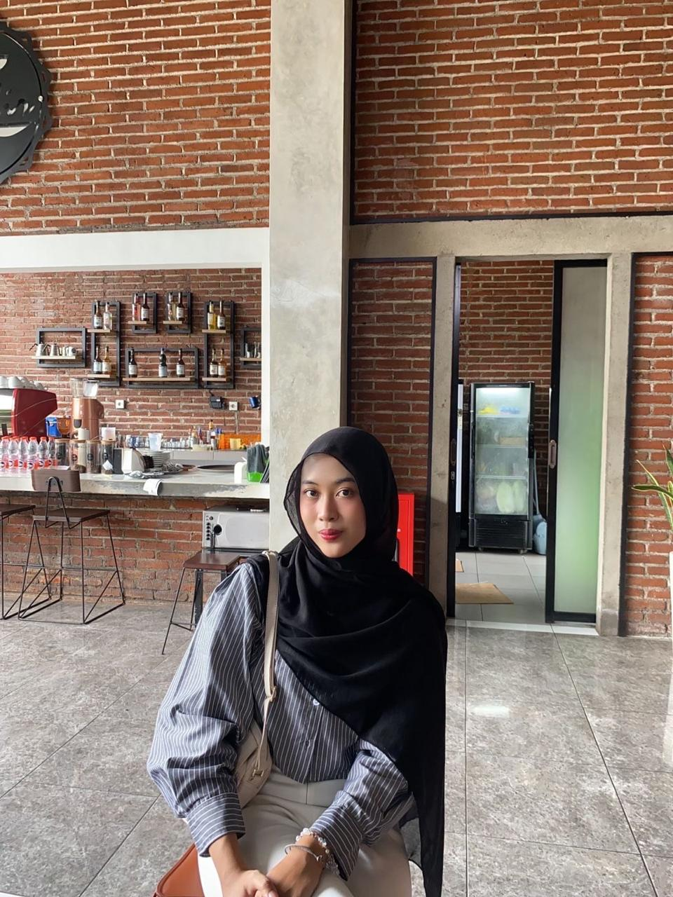

I am a student who graduated from high school with a science major and am currently studying Informatics Management at the State University of Surabaya. I have a strong desire to develop myself through organizational activities. I am skilled at socializing with many people, responsible in completing assigned tasks, and able to work both in a team and independently. In addition, I am proficient in using Microsoft Excel, Microsoft Word, Visual Studio Code, and Figma.